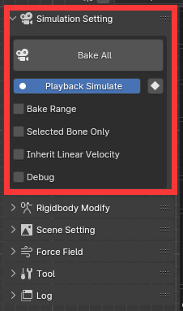

模拟
全部烘焙：点击该按钮，物理结果将被烘焙到关键帧中。 有 3 个过程阶段。 ①.收集运动学刚体数据。 ②.physx计算过程，如果勾选debug选项，可以在PhysX Visual Debugger中看到进度。 在此过程中可以按ESC键停止烘烤。 ③. 设置骨骼关键帧，这是一个漫长的过程，需要耐心等待。
播放模拟：如果启用，则在播放过程中进行模拟。
设置关键帧模式：Blender 设置关键帧有很大的性能问题。 所以我提供了两种设置关键帧的方法。 “普通”：通过高级API设置关键帧，使用更多时间。 “快”：通过基本api设置关键帧，速度更快，但会导致现有关键帧变成线性。 如果您没有在要模拟的骨骼上手动设置任何关键帧，“快速”是更好的选择。
烘焙范围：设置烘焙的模拟范围。 如果没有设置烘焙范围将是场景帧范围。
仅选定骨骼：如果启用，则仅模拟选定的骨骼。
继承线速度：如果启用，线速度将根据起始模拟帧之前两帧的相对位移计算为初始速度。
调试：如果启用，模拟数字将显示在 PhysX Visual Debugger中。 PhysX Visual Debugger下载：https://developer.nvidia.com/physx-visual-debugger